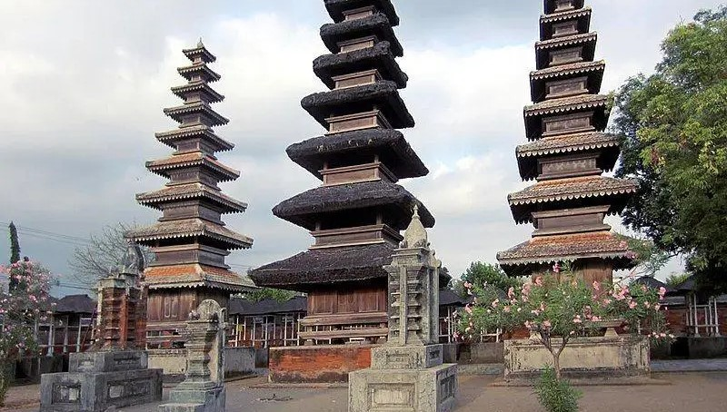
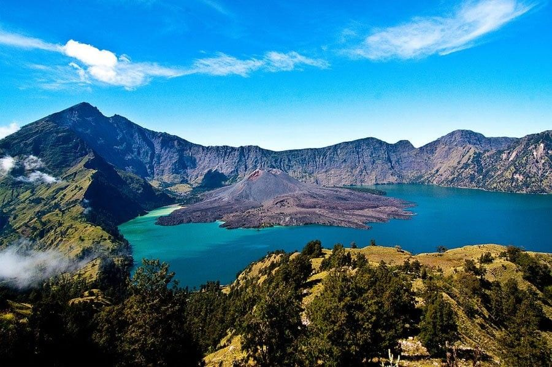
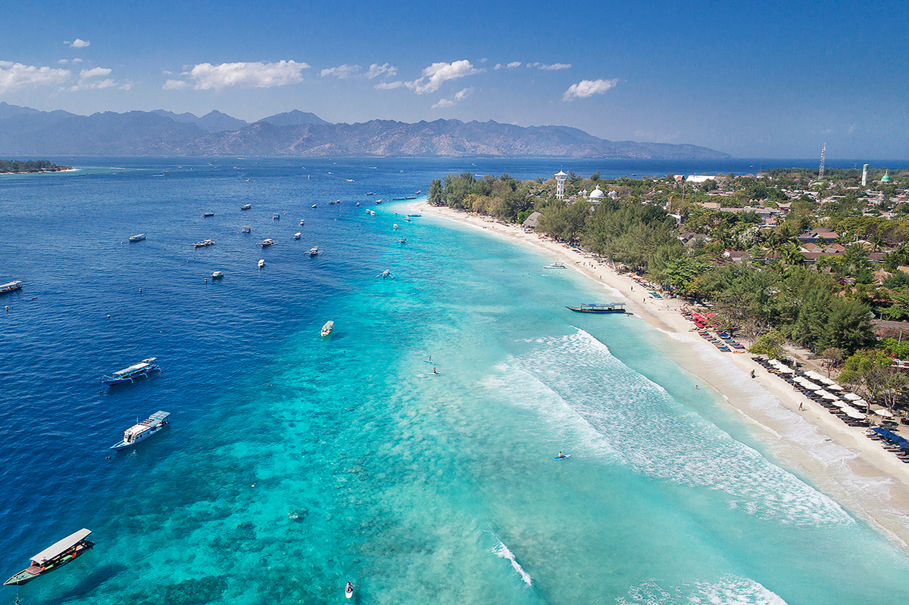
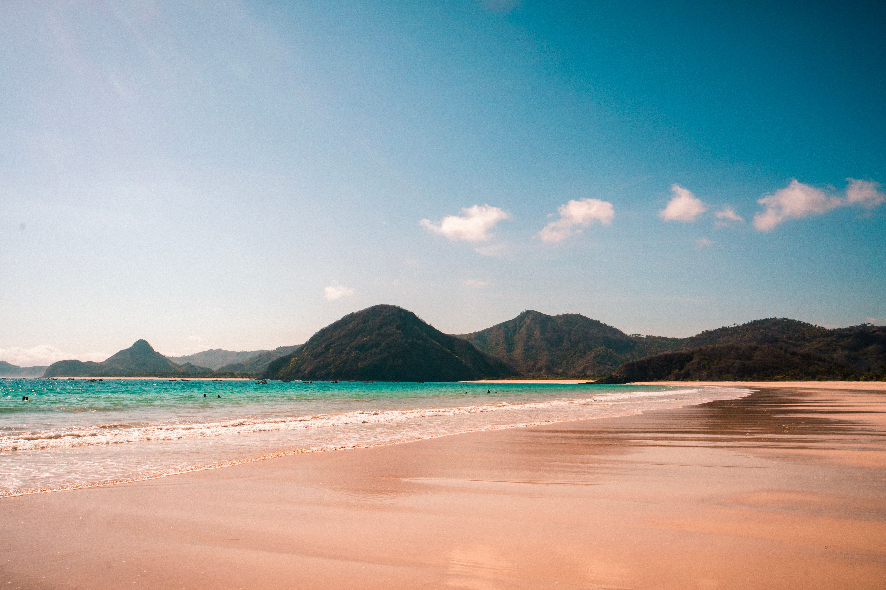
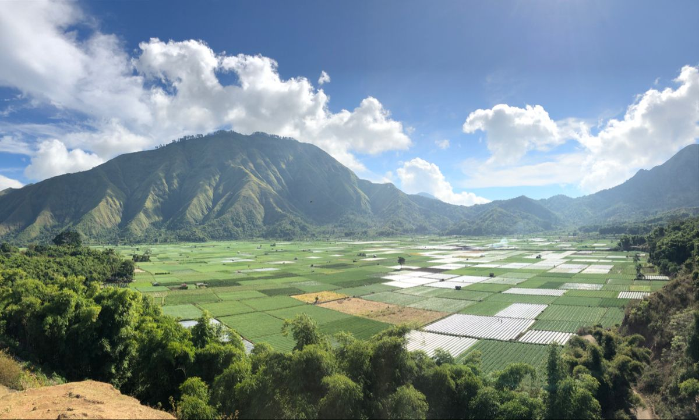
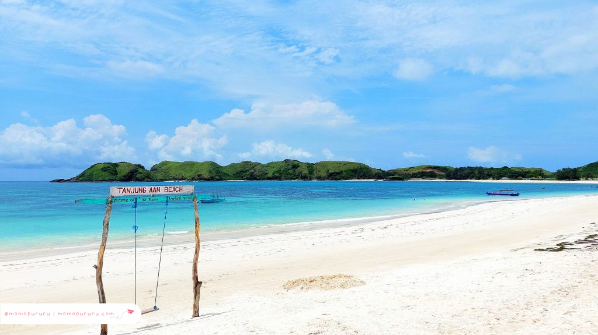

Sejarah

Nama Lombok diyakini berasal dari kata dalam bahasa Jawa Kuno,
lombok, yang berarti lurus atau jujur. Pulau ini sudah dihuni sejak
lama oleh Suku Sasak, dan namanya tercatat dalam kitab
Negarakertagama (1365) sebagai salah satu wilayah yang berhubungan
dengan Majapahit. Sebelum pengaruh luar menguat, Lombok terbagi
menjadi beberapa kerajaan lokal, seperti Selaparang, Pejanggik,
Pematang, Langko, dan Bayan. Pada abad ke-16, Islam masuk ke Lombok
melalui para penyebar agama dari Jawa, dan menjadi dasar budaya
masyarakat Sasak hingga kini.
Pada abad ke-17 hingga ke-18, pengaruh Kerajaan Karangasem dari Bali
mulai masuk ke Lombok dan menguasai sebagian besar wilayahnya,
sehingga kerajaan-kerajaan Sasak melemah. Kekuasaan ini berlangsung
sampai tahun 1894, ketika Belanda melancarkan ekspedisi militer ke
Lombok dan mengakhiri kekuasaan Bali di pulau ini. Setelah itu,
Lombok berada di bawah pemerintahan kolonial Belanda sampai masuknya
Jepang pada tahun 1942. Setelah Indonesia merdeka, Lombok menjadi
bagian dari Provinsi Nusa Tenggara Barat yang dibentuk pada tahun
1958.
Geografis

Pulau Lombok terletak di Provinsi Nusa Tenggara Barat, dibatasi
Selat Bali di sebelah barat, Selat Alas di sebelah timur, Laut Jawa
di sebelah utara, dan Samudra Hindia di sebelah selatan. Luas
pulaunya sekitar 4.725 km², dengan Kota Mataram sebagai ibu kota
provinsi. Di bagian utara berdiri Gunung Rinjani setinggi 3.726
meter di atas permukaan laut, gunung berapi tertinggi kedua di
Indonesia, yang memiliki danau kaldera bernama Segara Anak. Bagian
tengah pulau berupa dataran rendah yang subur dan menjadi pusat
pertanian, sedangkan bagian selatan didominasi perbukitan kering
dengan garis pantai berpasir putih.
Lombok beriklim tropis dengan dua musim, yaitu musim hujan yang
berlangsung kira-kira dari November hingga April dan musim kemarau
pada bulan-bulan sisanya. Wilayah selatan dan timur cenderung lebih
kering dibandingkan wilayah utara yang lebih lembap karena
dipengaruhi Gunung Rinjani. Secara administratif, pulau ini terbagi
menjadi Kota Mataram, Kabupaten Lombok Barat, Lombok Tengah, Lombok
Timur, dan Lombok Utara. Selat Lombok di sebelah barat juga dikenal
sebagai bagian dari Garis Wallace, batas persebaran flora dan fauna
antara wilayah Asia dan Australasia.
Wisata
Lombok menjadi salah satu tujuan wisata favorit di Indonesia berkat
pantai-pantainya yang indah dan suasana pulau yang masih asri.
Selain wisata alam, Lombok juga dikenal dengan budaya Suku Sasak dan
kawasan Mandalika yang kini menjadi destinasi wisata unggulan.
Gili Trawangan

Gili Trawangan adalah pulau kecil di barat laut Lombok yang
menjadi destinasi utama wisatawan lokal maupun mancanegara. Pulau
ini bebas dari kendaraan bermotor, sehingga pengunjung berkeliling
dengan sepeda atau cidomo, kereta kuda khas setempat. Airnya yang
jernih dan terumbu karangnya sangat cocok untuk snorkeling,
menyelam, dan melihat penyu laut dari dekat.
Pantai Kuta Mandalika

Pantai Kuta Mandalika berada di Lombok Tengah bagian selatan dan
terkenal dengan pasirnya yang berbutir seperti merica. Pantai ini
dikelilingi perbukitan hijau dan berada di kawasan Mandalika, yang
juga memiliki sirkuit balap internasional. Nama Mandalika berasal
dari legenda Putri Mandalika, yang diceritakan oleh masyarakat
Sasak dan dirayakan setiap tahun lewat tradisi Bau Nyale.
Sembalun

Sembalun adalah kawasan dataran tinggi di Lombok Timur yang
terletak di kaki Gunung Rinjani, pada ketinggian sekitar 1.100
meter di atas permukaan laut. Udaranya sejuk dan pemandangannya
berupa lembah hijau yang dikelilingi perbukitan dan Gunung Rinjani
yang menjulang. Sembalun juga menjadi salah satu pintu masuk utama
pendakian Rinjani, dan di sekitarnya ada Bukit Selong dan Bukit
Pergasingan yang cocok untuk menikmati matahari terbit. Daerah ini
dikenal pula sebagai penghasil stroberi dan bawang putih, sehingga
wisatawan bisa menikmati wisata alam sekaligus wisata kebun.
Pantai Tanjung Aan

Pantai Tanjung Aan terletak di kawasan selatan Lombok, tidak jauh
dari Bukit Merese dan kawasan Mandalika. Pantai ini terkenal
dengan keunikan dua jenis pasirnya, yaitu pasir putih yang sangat
halus di satu sisi dan pasir dengan butiran bulat menyerupai
merica di sisi lainnya. Garis pantainya melengkung membentuk teluk
yang menawan dengan air laut jernih bergradasi biru kehijauan,
serta ombak yang tenang sehingga sangat nyaman untuk berenang dan
bersantai menikmati pemandangan alam.